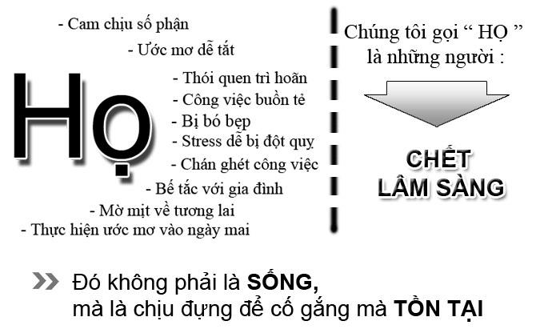

BẠN SỐNG HAY TỒN TẠI?
Một thời gian này, tôi chợt nhận ra sự khác biệt giữa hai từ ngữ “Sống” và “Tồn tại” mà trước đó dám chắc rằng không chỉ mình tôi mà nhiều người còn không thể hiểu nó khác nhau như thế nào (Không kể về hình thức ngữ pháp nhé, chỉ xét nghĩa thôi). Mà nó thì khác nhau như thế nào khi mà cả hai đều ý muốn nói đến việc con người còn có thể hít thở khí trời hay khí bụi đường tùy nơi, còn có thể nhìn trời, sao, biển cả, nói chung là còn trên thế giới con người như thế này.
;Thế mà dạo gần đây khi tôi được đọc vài quyển sách cùng với vài video nói về cuộc sống, tất cả chúng đã cho tôi thấy rõ sự khác nhau giữa sống và tồn tại là rõ ràng như xăng với nước lọc vậy.
Cơ bản thì tôi cũng chẳng biết định nghĩa mỗi thứ trong chúng ra là sao!! Ý kiến cá nhân riêng tôi chỉ nói rằng:
Sống là làm việc vì một mục đích nào đó, vì một lý tưởng, ước mơ nào đó bản thân theo đuổi, không từ bỏ. Họ luôn tin vào điều họ tin đó là ước mơ, mục đích sống đẹp của bản thân từ đó họ luôn luôn vui vẻ, hạnh phúc chấp nhận mọi thứ họ cho là cần thiết dù đó là thất bại đi chăng nữa.
Tồn tại là làm việc vì cuộc sống, làm việc vì nhu cầu trước mắt, họ không có ước mơ, mục đích sống của bản thân. Họ hay than phiền nhiều điều vì cuộc sống không như ý họ muốn. Họ chỉ chấp nhận cái tốt họ chối bỏ cái thất bại. Họ còn đi làm là vì họ phải đi làm chứ không phải họ muốn đi làm.
Uh, tôi chỉ nghĩ được có thế, nhưng thế cũng đã thấy được cái khác nhau nhiều của hai thứ đó rồi chứ nhỉ. Điểm mấu chốt là “mục đích sống” một cái là vì mục đích mà làm việc, một cái là không phải vì mục đích mà chỉ vì nhu cầu mà làm việc.
Nói thế nhiều người sẽ nghĩ “Con người sống mà không cố gắng làm vì nhu cầu trước mắt thì có cạp đất mà ăn, đời bây giờ mà cứ lo nghĩ đến cái mơ mộng của bản thân thì làm sao mà sống được”. Ok, tôi đồng tình với quan điểm này ở một khía cạnh nào đó của vấn đề. Uh, có quá nhiều bạn trẻ tôi biết có rất rất nhiều những ý tưởng hay ho, những ước mơ cao vợi nói chung nhìn nó rất đẹp nhưng cuối cùng sáng hôm sau họ vẫn phải bước vào lớp học hoặc ngủ hoặc đến nơi làm việc với cái cặp sách theo và đi về khi đến giờ. Đó chẳng phải là vì cuộc sống này muốn họ phải như thế sao.
Khi lớn lên rồi, lý do chính khiến ước mơ thuở bé của nhiều người bị bỏ vào một cái hộp khóa kín đi là vì nhu cầu cuộc sống, nhu cầu đó dù cao hay thấp thì cũng yêu cầu cơ bản là phải hít thở oxy, ăn thức ăn, uống nước. Cơ mà hai trong số chúng là phải dùng tiền để có cho nên khiến cho nhu cầu sống của con người hiện nay có thêm một cái nữa là tiền. Mà muốn có tiền phải làm gì? Tất nhiên đi làm, rồi có tiền, ít hay nhiều là do một phần thời gian làm việc ít hay nhiều. Tức là muốn có nhiều tiền phải làm nhiều (Nhiều việc, nhiều thời gian, nhiều sức bỏ ra). Thế là 24 giờ của một người phải dành ra cho nó ít nhất 1/2 thời gian cho việc kiếm tiền.
Bạn biết không? Ông trời rất công bằng với mọi người dù cho đó là ai, ông cho vốn cho mọi người đồng đều với nhau, đó chính là thời gian một ngày, đúng không nào, dù là đàn ông, đàn bà, trẻ con, người già, ăn trộm, luật sư, ca sĩ, diễn viên, chủ tịch, tổng thống,… tất cả mọi người đều chỉ có ngang nhau 24 giờ trong một ngày. Việc còn lại là tùy vào việc dùng vốn liếng có sẵn của ông trời ban cho mà dùng vào việc gì và sinh ra lời hay lỗ bao nhiêu thôi. Thế thì có người lại bảo “Có những con người sinh ra trong gia đình giàu có, tiền của lắm, hoàn cảnh tuyệt với thì sao?”. Uh, bản thân tôi cho rằng họ là những con người bình thường như chúng ta, tuy có hoàn cảnh, điều kiện tốt, đổi lại họ không có được cái cảm giác khổ cực của người nghèo khó, họ không biết đồng tiền quý trọng bao nhiêu, và trên hết họ chưa hẳn đã có một gia đình hạnh phúc, họ chưa hẳn có được những người bạn chân thành như những người khác. Có thể bạn xem đó là lời nói chẳng có bằng chứng gì hay lời nói không đúng sự thật. Uh, tôi cũng không thể đưa ra bằng chứng thuyết phục bạn được. Nhưng bạn cứ thử có một người bạn giàu có nào xem họ sống như thế nào, có rất nhiều thú vui đời thường dân dã chúng ta mà chưa chắc một người con gia đình giàu có nào có thể trải nghiệm được. Như tôi nói lúc nãy, ông trời rất công bình, đừng tự so sánh mình với ai khác, người khác cũng đang làm điều đó tương tự với bạn đấy. Đúng là con người không chọn được ba, mẹ, hoàn cảnh ra đời, nhưng họ phải làm chủ đời sống bản thân họ.
Thế nhé, thế là vốn ban đầu của mọi người ai cũng là như nhau. Nhưng tại sao? Một người làm ông chủ lớn, một người làm công nhân, một người làm vĩ nhân, một người chỉ làm những người bình thường trong đời.
Đó là cách dùng vốn đấy. Nói về cách dùng vốn thì có nhiều cách khác nhau, tôi sẽ nói tiếp ở những phần sau nhỉ. Ở đây chỉ nói đến cái suy nghĩ của mọi người là khác nhau nên tất nhiên họ đạt được những điều khác nhau.
Ở những người sống trong đời sống dù áp lực cuộc sống rất lớn, đối với ai cũng vậy nhưng lòng họ vẫn hướng về mục tiêu trong đời cái ước mơ của ngày thơ bé, họ kiên trì bền trí với nó. Họ không cho phép cuộc sống điều khiển họ, họ phải là người điều khiển bản thân họ, phải là người làm chủ cuộc sống của họ. Suy nghĩ của họ là những suy nghĩ tích cực dù cuộc đời có tiêu cực đến đâu, họ hiểu rằng, ý nghĩ là của riêng mình đừng để cuộc sống phải tác động điều khiển ý nghĩ của họ thế thì họ chẳng còn gì gọi là tự do nữa cả.
Tôi thường hay hỏi một vài người ước mơ của họ là gì, đa phần trong số đó nói rằng họ chỉ cần học xong, học hết lấy bằng đi làm, sau này cưới chồng/gả vợ sinh con thế là xong, thậm chí có người đã có con rồi nữa. :D Như thế thì bản thân tôi thấy nó khá lãng phí, trái đất này có hằng tỷ người trong khi người chúng ta gặp khi đến độ tuổi 20 đối với người dân Việt cùng lắm chỉ chưa tới một phần mười, Việt Nam chỉ có ba miền Bắc, Trung, Nam thế nhưng bao nhiêu người ở độ tuổi ấy đã đi hết đất nước chưa, điều đó là chưa nói thế giới này Việt Nam cũng chỉ là một trong hàng trăm quốc gia khác, món ăn hằng ngày của ta cũng chỉ quẩn quanh bao nhiêu thứ đó trong khi thế giới chẳng ai giống ai cả, cho nên cách ăn của họ ta đã biết hết âu. Tôi thấy thật tiếc nuối cho tuổi trẻ khi ước muốn của họ lại chỉ quẩn quanh ao làng. Thế đấy, những người như thế tôi gọi họ là đang tồn tại trên thế gian này, họ chỉ làm vì nhu cầu, mọi thứ vì nhu cầu. Không có được một mục đích xa xôi, một cái gì đó thay đổi đời họ, bước ra cái vòng lẩn quẩn qua bao thế hệ.
Trên thực tế số người tồn tại có rất nhiều, đặc biệt ở các nước đang phát triển trong khu vực Châu Á mà Việt Nam ta nằm trong đó. Đôi khi tôi tự hỏi nếu thế giới ai cũng là như thế thì sao? Bạn sẽ không có một nhà khoa học chứng minh rằng Trái đất quay quanh mặt trời khi mọi người đều cho rằng mặt trời phải quay quanh Trái Đất, bạn sẽ không có một chiếc bóng đèn dây tóc khi người tạo ra nó lại thất bại đến cả ngàn lần, bạn sẽ không có được các định luật vật lý hay toán học khi chẳng ai quan tâm điều đó cả,…. Đó là thế giới, đối với Việt Nam ta không muốn nói về quá khứ nữa, hiện tại nếu chỉ có những người chỉ biết tồn tại trong đời sống thì hỡi ơi khi nào nước ta mới có thể phát triển được.
;
Từ bây giờ bạn hãy đặt ra một mục tiêu cho chính mình đi nào, một mục tiêu cụ thể, cùng với đó là một kế hoạch cụ thể, đương nhiên bạn vẫn phải làm việc để đáp ứng nhu cầu của bản thân, song với đó bạn có thể đặt kế hoạch một cách khoa học để đạt được thành công. Đừng chỉ mãi làm tròn vai trong cuộc sống rồi cứ thế mà đến khi cuối đời tiếc nuối cho biết bao nhiêu thứ mình đã chưa làm vào lúc ấy.
Umh, có lẽ lời nói của “Thằng khờ” này chẳng có quá nhiều sức mạnh tuy nhiên bạn hãy “Sống ngay bây giờ và chớ bao giờ chỉ tồn tại một vai quần chúng trong vở diễn trên sân khấu kia”